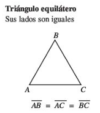

Clasificación de los triángulos por sus lados:
La clasificación de los triángulos según la longitud de sus lados se divide en tres tipos principales:
Triángulo Equilátero
Definición: Todos sus lados tienen la misma longitud.
Propiedades:Todos los ángulos internos son iguales y miden 60°.
Es un triángulo regular, ya que es equilátero y equiángulo.
Ejemplo: Un triángulo cuyos lados miden 5 cm cada uno.

Triángulo Isósceles
Definición: Tiene dos lados de igual longitud y un lado diferente.
Propiedades:Los ángulos opuestos a los lados iguales también son iguales.
Si el lado diferente es la base, las alturas desde los vértices coinciden con las bisectrices y medianas en algunos casos.
Ejemplo: Un triángulo con dos lados de 7 cm y uno de 5 cm.

Triángulo Escaleno
Definición: Todos sus lados tienen longitudes diferentes.
Propiedades:Todos los ángulos internos son distintos.
No tiene ejes de simetría.
Ejemplo: Un triángulo con lados que miden 4 cm, 5 cm y 6 cm.

Clasificación de los Triángulos por sus Ángulos
Los triángulos pueden clasificarse según las medidas de sus ángulos internos en tres categorías principales:
Triángulo Acutángulo
Definición: Todos sus ángulos internos son menores de 90°.
Propiedades:
Es el único tipo de triángulo en el que todos los ángulos son agudos.
La suma de los tres ángulos internos sigue siendo 180°.
Ejemplo: Un triángulo con ángulos de 50°, 60° y 70°.

Triángulo Rectángulo
Definición: Tiene un ángulo recto (es decir, de 90°).
Propiedades:Los otros dos ángulos son agudos y su suma es 90°.
El lado opuesto al ángulo recto se llama hipotenusa, y es el lado más largo del triángulo.
Los otros dos lados se denominan catetos.
Es fundamental en la trigonometría y el Teorema de Pitágoras.
Ejemplo: Un triángulo con ángulos de 90°, 30° y 60°.

Triángulo Obtusángulo
Definición: Tiene un ángulo obtuso (es decir, mayor de 90° pero menor de 180°).
Propiedades:Solo puede tener un ángulo obtuso, ya que la suma de los tres ángulos internos es 180°.
Los otros dos ángulos son agudos.
Ejemplo: Un triángulo con ángulos de 120°, 40° y 20°.

CONSTRUCCIÓN DE TRIANGULOS EN GEOGEBRA.